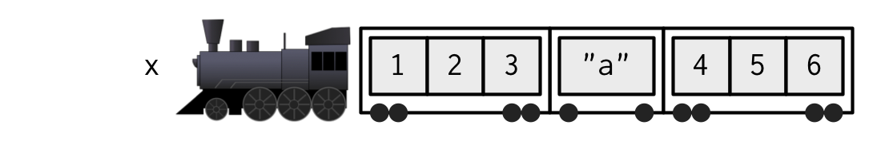

Lists
The most flexible of structures
Last Time
- Comments mark text that R will not evaluate.
- Subsetting can be used to change a vector in place.
- A matrix is a vector with a dimension attribute.
- Matrices are subset by
[row, col]or by[el]. - Row- and column-wise summaries operate on whole margins.
Key Ideas for Today
- A list is a non-atomic vector: types can be mixed.
[]subsets a list and returns a list.[[ ]]and$return the object inside the list.- Lists can nest, so subsetting can be chained.
$allows subsetting by name.
One more way to subset a vector…
[1] 1 3Negative indexing will drop that element (or set of elements) from the vector.
Discuss with a neighbor
Which of the following four objects are the same?
01:30
Discuss with a neighbor
Which of the following four objects are the same?
Atomic Vectors
By atomic we mean:
- All elements of the same type
- Cannot contain other vectors
Introducing Lists
Lists, defined
List
A non-atomic vector that can contain atomic vectors of different types, as well as other lists. Created with list().
“Contains atomic vectors of different types”
Subsetting with []
Subsetting with []
[] extracts elements of a vector (atomic or non-atomic) using a subsetting (atomic) vector.
- Atomic vectors and matrices return atomic vectors
Subsetting with []
[] extracts elements of a vector (atomic or non-atomic) using a subsetting (atomic) vector.
- Atomic vectors and matrices return atomic vectors
- Lists return lists
Yes, you can name elements of a list
$Ape
[1] 1 2 3
$Boy
[1] "a"
$Cat
[1] 4 5 6Yes, it works with logicals too
But what if you want the actual data structure inside the list?
Subsetting with [[ ]]
Subsetting single elements with [[ ]]
[[i]] extracts the original object inside the list.
To tell [] and [[ ]] apart, let’s use a metaphor of a train.
Guess the metaphor
A list is like a train: an ordered line of cars, each holding cargo of whatever kind.
[]gives you back a train;[[ ]]gives you the cargo.


Draw the appropriate train or car for each of the following
x[1:2]x[[3]]x[-2]x[c(1, 1)]c(x[[3]], x[[1]])
02:30
Subsetting with $
Subsetting single elements with $
$ will extract a single element of a list by name.
[1] 4 5 6Permits partial matching.
Nesting
Lists, defined
A list is a non-atomic vector that can contain:
- Atomic vectors of different types
- Other lists
Implications for subsetting
Draw the train:
Your Turn
Draw the train, then write the R code to extract:
- The list containing the character vector with
"rabbit" - The vector
"rabbit" - The second element of the list element in
y - The vector
1:3 - The element
2
02:00
Key Ideas for Today
- A list is a non-atomic vector: types can be mixed.
[]subsets a list and returns a list.[[ ]]and$return the object inside the list.- Lists can nest, so subsetting can be chained.
$matches by name, and permits partial matching.
For Next Time
- Good luck on Quiz 1!
- Work through the lists questions on the problem set.
- Work through Project 1: Sampson’s Monks.
- Read Advanced R, Ch. 3.3.
References
- Train diagrams from Advanced R by Hadley Wickham.